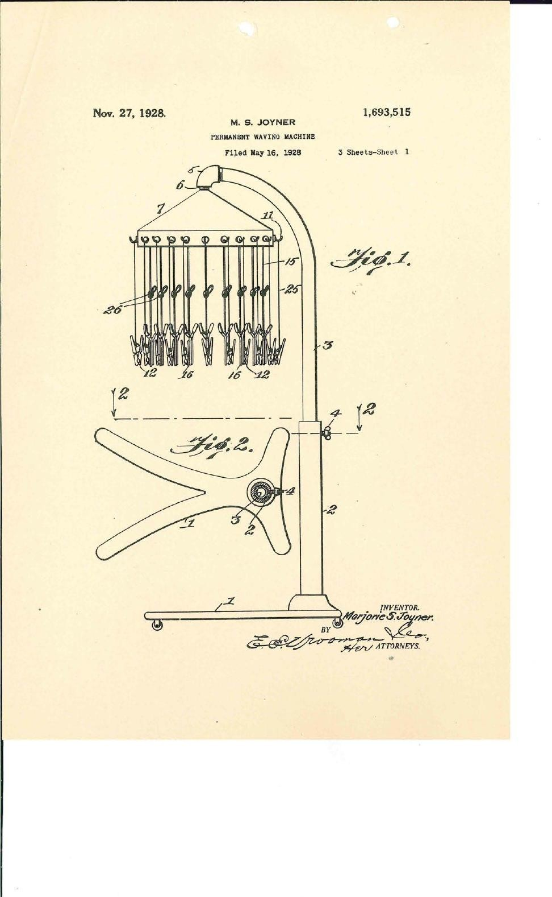
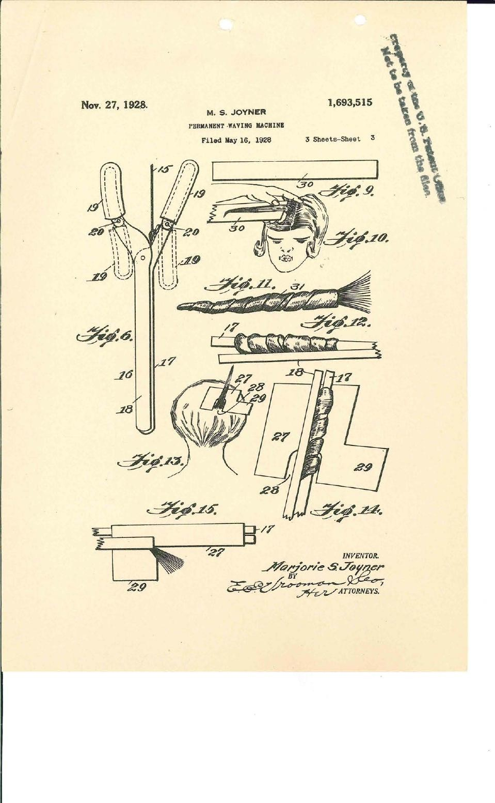
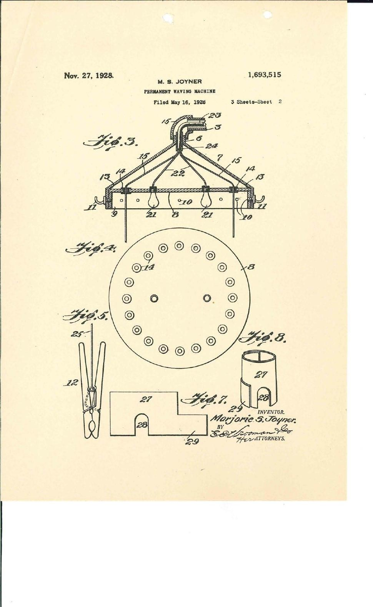

Marjorie Stewart Joyner (1896–1994) combined technical invention with decades of professional education. Explore her story through original patent documents and carefully identified historical sources.
Biography
From Chicago beauty education to national professional leadership.
Explore her life →
The Invention
What the 1928 machine was designed to do, and how it worked.
Examine the invention →
Patents & Drawings
Two identified patents, three original drawing sheets and the complete 29-page case file.
View the original records →Joyner & Walker
Beauty schools, professional independence and the Walker company.
Discover the connection →
The complete 1928 patent file
Explore 29 original pages, including patent drawings, correspondence and examination records.
This project distinguishes patent evidence from later biographical accounts. See Historical Context and Sources & Rights for further research, attribution and image-use information. The patent illustrations shown here come from the archived patent case file; other collection photographs have not been reproduced without permission. The historical portrait is included for private review only; permission or a documented reuse basis must be established before public publication.